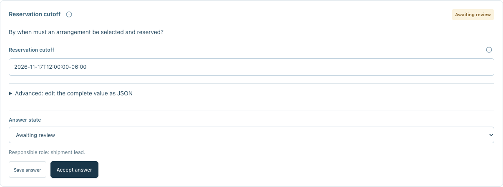
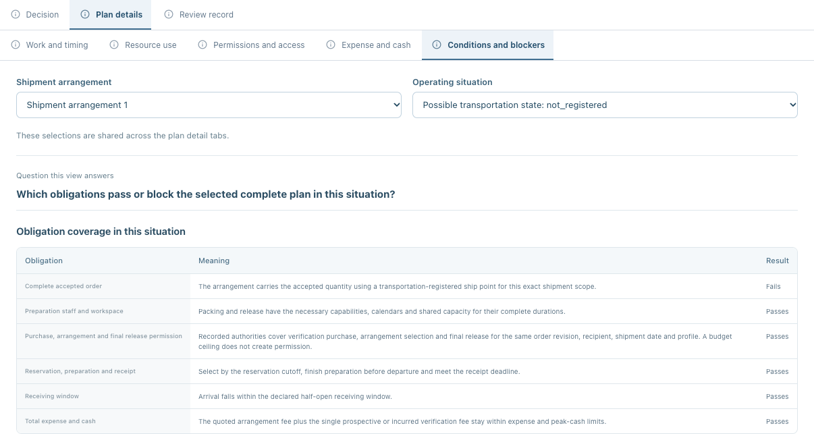
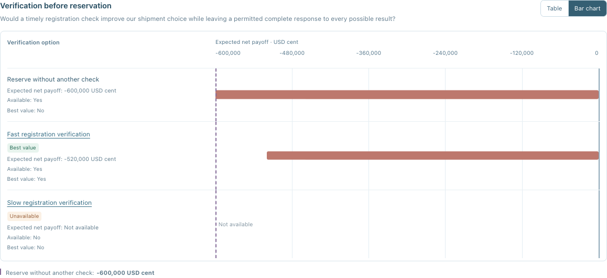
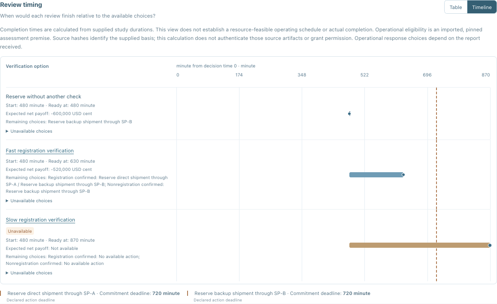
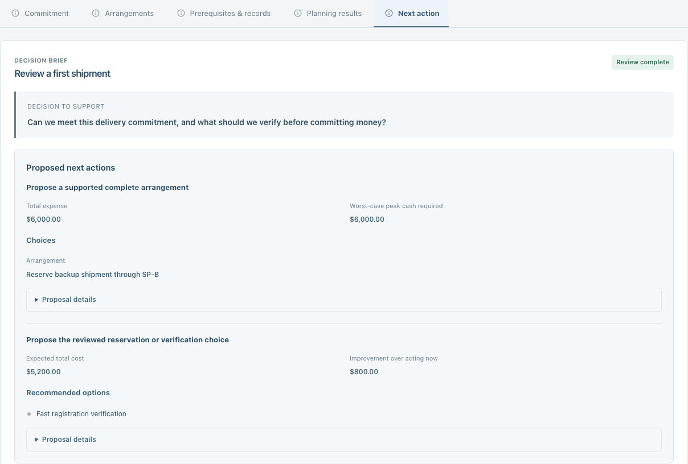

Requirements reference: Walmart’s checklist, p. 11 (collect suppliers). Business context: 8th & Walton (Terry Clear, June 4, 2025). This walkthrough uses a source-informed fictional example. Sources and demonstration scope.
Use a published review to examine a particular shipment. The app author has prepared the questions and checks; your job as a case worker is to supply the records, review what they establish, and identify the next business action.
The workflow brings together reusable solutions to recurring problems: interpret evidence while keeping uncertainty visible, compare complete shipment plans with their recorded arrangements, and assess whether verification would help before commitment. The app author has connected these approaches for this review. You supply this shipment’s facts and review the resulting findings. See Pattern Languages for Human Decisions for the broader idea.
A shipment plan describes the intended route, dates and cost. An arrangement connects the work, people, resources, permissions and dependencies needed to carry it out over time. The arrangement changes as the situation develops; this app evaluates the version you have recorded. Update answers and reassess affected findings when conditions or evidence change. See The Arrangement Problem in Human Decisions for the broader concept.
This walkthrough runs the exact 1.0.1 release exported in the app-author reference guide. It retains the existing template’s fictional shipment example and underlying rules. Keep the business process chart available as a reference.
Open the published example.
Open Decision Lab. Choose Published apps → Import app, workflow or case, then select one of these downloads:
- Reviewed example (.workflow-run.json): inspect the same calculated reports and demo reviews shown in the screenshots. Open Next action for the brief or Planning results for its supporting assessments.
- Fresh example (.workflow-run.json): work through the supplied answers and assessments yourself. This is the starting point for the steps below.
To make further cases, import the author’s workflow package using the same control. In Guided reviews, choose Try worked example for the supplied fictional inputs, or Start review for an empty case.
Review the supplied answers.
Enter a reviewer name. Work through Commitment, Arrangements, and Prerequisites & records. Inspect the supplied information, select the question’s assigned Acting role, and choose Accept answer when you have reviewed it.
The shipment lead reviews shipment and operating details. The finance reviewer reviews funding, purchase authority, the probability assessment, and verification offers. All 25 supplied answers need review before the complete worked assessment can run. A missing or unknown answer does not become established just because another field is filled in.


The screenshots record illustrative reviews under the name Example reviewer. Selecting an acting role records responsibility within this case; actual business authority is represented separately.
This worked case includes optional verification analysis. A review of shipment feasibility can use the evidence and planning results without assigning probabilities; the expected-value comparison needs a separately reviewed probability assessment.
1. Start with the shipment commitment.
In Commitment, review order ORD-104: 100 cases for DC-X. The shipment must be reserved by noon on November 17, with receipt by 5 p.m. on November 20. The case allows 30 minutes to respond to a verification result.
In Arrangements, review the two shipment plans and their recorded requirements: direct shipment through SP-A for $4,000, or backup through SP-B for $6,000. Both quote arrival at noon on November 20. Prerequisites & records holds the operating resources, records, funding, and scoped authority used to check those plans.

2. See what the records establish.
In Planning results, evaluate Review the transportation records. Inspect its Explanations → Overview view before choosing Accept result for this review.
The supplied portal capture lists SP-A, but does not state whether that ship point is transportation-registered for this exact shipment. Both registered and not_registered remain possible. Keep both in the planning review; a listing alone does not settle the operating requirement.

3. Compare more than the freight quote.
Evaluate Compare complete shipment arrangements, then inspect Decision → Complete alternatives. The app evaluates the recorded arrangement supporting each plan in both remaining transportation states, including preparation, timing, resources, recorded permissions, expense, and cash.
The $6,000 backup passes every mandatory obligation in both states. The $4,000 direct plan is blocked in the not-registered state, so its lower price does not make it an available choice on the current evidence. Accept the planning result after reviewing that comparison.

4. Open the requirement behind the blocker.
In the same assessment, open Plan details → Conditions and blockers. Select Shipment arrangement 1 and the not_registered operating situation.
Complete accepted order fails because the direct ship point must be transportation-registered for the exact shipment scope. The preparation, permission, timing, receiving-window, expense, and cash obligations pass in this situation. That tells the team which question needs resolving before the cheaper shipment plan could be supported.


5. Ask whether another check is worth buying.
Evaluate and review Check complete responses after fast verification and Check complete responses after slow verification. These assessments test the complete shipment choices still available after each possible report. Then select finance reviewer to evaluate and review Compare verification with reserving now.
Under the example’s explicitly hypothetical 50/50 probability assessment and stipulated perfectly accurate verification, the $200 fast verification supports an expected total cost of $5,200, including its fee. That is $800 below reserving the backup immediately. If registration is confirmed, the response can select direct shipment; if nonregistration is confirmed, it selects backup.
Open Verification before reservation and choose Bar chart to inspect the comparison. The recommendation depends on the supplied probabilities, costs, and feasible responses.


6. A cheaper answer can arrive too late.
In Verification before reservation, switch Review timing to Timeline. The fast report is available at 10 a.m.; with the 30-minute response allowance, the team can choose a shipment plan at 10:30 a.m., before the noon reservation cutoff.
The $50 slow report arrives at 2 p.m. Its response would be ready at 2:30 p.m., after reservation closes. It cannot support a timely choice, even though its fee is lower. Compare when a result can change the action, as well as what the result might say.


7. Keep the recommendation and its conditions together.
Open Next action after accepting the current assessment results. The decision brief brings together the $6,000 supported shipment plan, the $5,200 expected-cost verification choice, the $800 expected improvement, and links to the supporting assessments.
Read Authority and next operating actions further down the brief. The case records a $250 verification purchase limit and separate release authority. The reviewed proposal still needs the actual purchase, booking, and release actions; the calculation does not perform them.
Use Export workflow run to keep a portable copy of your review, or Download decision brief to share its recorded basis. If a quote, record, or approval changes, accept the updated answer and reassess the affected findings before relying on the proposal.


Download the exported decision brief.
Test the review against your work.
Use this first example to identify where the existing template helps and where the business problem exceeds it. In particular, the current verification comparison needs at least one immediately feasible shipment plan. If every plan is blocked, inspect the blockers and revise the recorded alternatives or commitment; the workflow does not construct a remediation or escalation plan for you.
- Can you explain the difference between a portal listing and the registration claim this decision needs?
- Can you identify the exact failed requirement, rather than just the cheaper quote?
- Can you distinguish a possible state, a probability assumption, and an accepted operating record?
- If you accept a changed quote or record, can you see which findings need reassessment?
- Can the team name the next real action, its owner, and the evidence needed to close it?
Share the point where the review stops matching your work through the contact form below. That feedback will guide which readiness conditions and recovery activities the next template should represent.